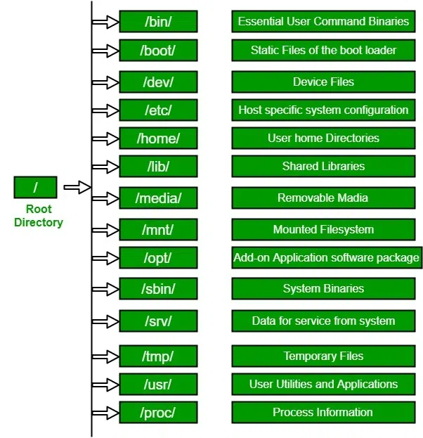

Filesystem, commands, users, groups, and permissions essentials for DevOps
← Back to Linux BasicsUnderstanding the Linux filesystem hierarchy is essential for navigating and managing resources effectively.
/). All other directories and files branch from this single point. / (Root): The primary directory from which all other files and directories originate./bin (Binaries): Contains essential user command binaries (e.g., ls, cat, mv) that are needed for the system to boot and run./boot: Stores files required for booting the system, such as the Linux kernel, initial RAM disk image (initramfs), and boot loader configuration files./dev (Devices): A virtual directory containing special files that represent hardware devices (e.g., hard drives, terminals)./etc (Etcetera): Contains system-wide configuration files and scripts./home: Contains the personal directories for regular users. For example, a user named user01 would have their home directory at /home/user01./lib (Libraries): Contains essential shared libraries needed by the binaries in /bin and /sbin./media: A mount point for removable media devices such as USB drives and CDs./mnt (Mount): A temporary mount point for mounting file systems, such as network shares./opt (Optional): Used for installing optional application software that is not part of the core system./proc (Processes): A virtual filesystem that provides a window into the kernel and active processes, containing real-time system information./root: The home directory for the root superuser, separate from other user home directories./sbin (System Binaries): Contains essential system administration binaries (e.g., fdisk, mke2fs, shutdown) that typically only the root user can run./tmp (Temporary): A directory for temporary files created by various programs and users. These files are often deleted upon system reboot./usr (Unix System Resources): The largest portion of the file system hierarchy, containing secondary hierarchy for user data, programs, and libraries (e.g., /usr/bin, /usr/lib, /usr/share)./var (Variable): Stores variable data files, such as system logs (/var/log), databases, and temporary files that are not deleted on reboot. 